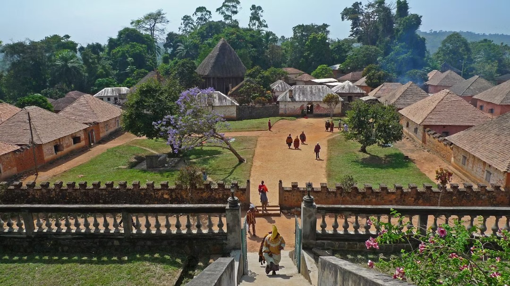

Touristic Attractions in Cameroon
Cameroon, often called "Africa in Miniature" due to its incredible diversity in geography, culture, and wildlife, offers a wide range of attractions for tourists. Here are some highly recommended places to visit:

1-Founban Royal Palace/Museum
Foumban Royal Palace and Museum (Western Region): Home to the Sultan of the Bamoun people, this palace houses a significant collection of art and historical artifacts from one of Cameroon's oldest kingdoms. The new museum building is architecturally impressive, incorporating traditional Bamum symbols.
2-Mount Fako
Mount Cameroon (Southwest Region): The highest peak in West Africa (4,095 meters / 13,435 feet) and an active volcano. It's a top destination for hikers and adventure seekers. Treks can range from 2 to 4 days, offering breathtaking views, volcanic landscapes, and diverse flora and fauna. The annual "Race of Hope" involves athletes racing to the summit.
3-Limbe Wildlife Center
The Limbe Wildlife Centre (LWC) is doing incredible work right here in Limbe, Cameroon. It's a vital project focused on giving a second chance to animals rescued from the illegal wildlife trade. Working hand-in-hand with the Cameroonian government, the LWC offers a safe haven for many species, especially endangered gorillas, chimpanzees, and other primates. But it's more than just a sanctuary; the LWC is also a buzzing educational hub. It welcomes thousands of visitors and works closely with local communities, teaching everyone why protecting our precious wildlife matters. On top of that, the Centre actively helps law enforcement crack down on wildlife crime and even supports local communities through initiatives like its "Green Project," which helps people find new, sustainable ways to earn a living. Ultimately, the LWC is a cornerstone in preserving Cameroon's rich and unique biodiversity for all of us, and for future generations.
4-Waza National Park
Waza National Park, nestled in the far north of Cameroon, is truly a jewel for anyone passionate about African wildlife. This magnificent park offers a classic safari experience, inviting visitors to witness a vibrant array of animals, including impressive herds of elephants, majestic lions, graceful giraffes, and various antelopes like the roan and kob. During the dry season, generally from November to June, the park truly comes alive as animals gather around shrinking waterholes, making sightings more frequent and spectacular. Beyond its remarkable mammals, Waza is also a paradise for birdwatchers, boasting a diverse collection of avian species that add another layer of natural beauty to its vast, open savanna landscapes
5-Menchum Falls
Menchum Fall, tucked away in Cameroon's Northwest Region, is a truly impressive sight, where the Menchum River plunges dramatically amidst lush, green landscapes. Located roughly 20 kilometers south of Wum, it has long captivated travelers with its raw natural beauty, creating a striking spectacle for anyone lucky enough to visit. Despite its undeniable allure and significant potential for tourism, the fall faces challenges, including difficult access roads and a viewing area that often needs better upkeep. This majestic waterfall also holds cultural and spiritual importance for local communities, and its powerful waters are even being considered for future hydroelectric projects, highlighting its multifaceted significance to the region.
6-Lobe Falls Kribi
One of Kribi's most breathtaking natural wonders is Lobe Falls, a truly unique spectacle where the Lobe River cascades directly into the Atlantic Ocean. It's an astonishing sight, unlike many other waterfalls in the world, creating a powerful blend of freshwater and ocean spray right on the coast. Visitors often take a short, scenic canoe ride to get up close, feeling the mist and appreciating the sheer force of the water as it plunges from a 20-meter height into the waves below. Beyond the falls themselves, the surrounding area is rich with the vibrant life of the equatorial forest and offers glimpses into the traditional lives of nearby fishing communities, making it a truly immersive experience for anyone exploring Cameroon's beautiful southern coast.